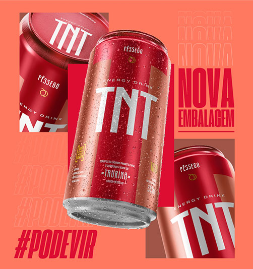
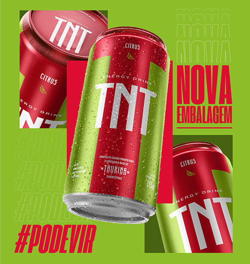

Produtos

Original
É tanta energia que dá até para dividir com alguém. É o latão pra quem encara tudo o que vem pela frente e bate no peito pra dizer: pode vir!

açaí com guaraná
TNT Açaí com Guaraná traz toda energia e sabor das frutas brasileiras, ótima opção para dar um gás a mais nos estudos, no trabalho e nos esportes.

Pêssego
TNT Pêssego conta com a mesma energia da cafeína e do extrato de guaraná ao suco da fruta. Resultado em uma bebida super saborosa e apresentando-se como alternativa aos tradicionais refrigerantes no acompanhamento de refeições.

Citrus
TNT Citrus, com seu sabor cítrico e refrescante, conquista os consumidores que buscam a energia da cafeína e do extrato de guaraná, mas não abrem mão de ter uma bebida leve, além de ser um ótimo aliado dos mixologistas no preparo de drink.

Maçã verde
A mesma energia, mas com um gosto único? Pode vir! O TNT Maçã Verde tem um sabor que é uma explosão pra te surpreender.